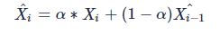
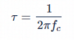
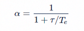
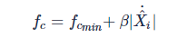
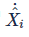
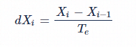
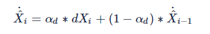

LowPassFilterMethod¶
功能¶
LowPassFiltermethod采用OneEuroFilter滤波策略对点和框做平滑操作，用于对box和kps进行位置纠正，修复box和kps的抖动问题。
原理¶
在去抖动过程中，滤波是一种常见方法，但是滤波会存在一个抖动和延迟平衡的问题，以一阶低通滤波器为例：

当α比较小的时候可以起到比较好的滤波作用，突变值可以很好被消除，所以对抖动的抵抗能力就比较强。但是当我们的信号正常变化的时候，由于α系数的关系，会导致滤波后的信号的变化出现滞后，并且α越小，这种滞后就越严重——这也就是延迟问题。
One Euro Filter就是针对jitter(抖动)和lag(延迟)的问题，提出了一种改进的，自适应的低通滤波器。
当信号变化的不剧烈的时候，大家对抖动比较敏感，使用比较小的α，这样可以尽量减小抖动。
当信号变化比较剧烈的时候，大家对延迟比较敏感，就使用较大的α，这样可以让滤波信号快速跟踪上原始信号变化，减小延迟。
具体方法如下： RC电路系统中，时间常数time constant τ和截断频率cutoff frequency fc之间的关系如下：

信号的采样周期为Te，那么我们定义α为：

然后根据低通滤波公式，随着fc减小，τ会增大，α减小，这样可以比较好的消除jitter；反之，可以减小lag。 所以我们可以通过动态调节fc来达到自适应调节的功能，one euro filter定义了

其中是原始信号的梯度（两次采样除以采样周期），再经过一次低通滤波，这里的低通滤波的截止频率是固定的，这样可以避免梯度非常大，而导致抖动：


这里的αd是在固定截止频率f的情况下得到的。
这里我们发现α和fc成正常相关，α和防lag成正相关，和防jitter成负相关。 当我们的系统信号X变化较剧烈时，会导致fc变大，从而α增大，使系统向防lag一方倾斜； 当我们的系统信号X变化很小时，会导致fc变小，从而α减小，使系统向防jitter一方倾斜。 通过以上步骤，系统完成了自适应的过程。
实现¶
输入¶
|Slot |内容 |备注 | |:—:|:—:|:—:| |0|box_list|可为face,body,hand等| |1|kps_list|与box_list对应的kps| |2|disappeared_id_list|消失的track_id|
输出¶
|Slot |内容 |备注 | |:—:|:—:|:—:| |0|box_filtered_list|| |1|kps_filtered_list||
配置文件¶
|字段 |描述 |默认值 | |:—:|:—:|:—:| |dcutoff|截止频率|1.0| |beta|调整截止频率fc的系数|0.1| |mincutoff|截止频率下限|0.2| |frequence|信号采样频率|120|
基本类定义¶
LowPassFilter¶
class LowPassFilter {
double y, a, s;
bool initialized;
void setAlpha(double alpha) {
if (alpha <= 0.0 || alpha > 1.0) {
throw std::range_error("alpha should be in (0.0., 1.0]");
}
a = alpha;
}
public:
explicit LowPassFilter(double alpha, double initval = 0.0) {
y = s = initval;
setAlpha(alpha);
initialized = false;
}
double filter(double value) {
double result;
if (initialized) {
result = a * value + (1.0 - a) * s;
} else {
result = value;
initialized = true;
}
y = value;
s = result;
return result;
}
double filterWithAlpha(double value, double alpha) {
setAlpha(alpha);
return filter(value);
}
bool hasLastRawValue(void) {
return initialized;
}
double lastRawValue(void) {
return y;
}
};
核心接口filter为一阶低通滤波：
result = a * value + (1-a) * s
value为本次输入坐标值，a为alpha系数，s为上次滤波输出值，该接口完成对当前输入值的滤波处理。
OneEuroFilter¶
class OneEuroFilter {
double freq;
double mincutoff;
double beta_;
double dcutoff;
LowPassFilter *x;
LowPassFilter *dx;
TimeStamp lasttime;
double alpha(double cutoff) {
double te = 1.0 / freq;
double tau = 1.0 / (2*M_PI*cutoff);
return 1.0 / (1.0 + tau/te);
}
void setFrequency(double f) {
if (f <= 0) {
throw std::range_error("freq should be >0");
}
freq = f;
}
void setMinCutoff(double mc) {
if (mc <= 0) {
throw std::range_error("mincutoff should be >0");
}
mincutoff = mc;
}
void setBeta(double b) {
beta_ = b;
}
void setDerivateCutoff(double dc) {
if (dc <= 0) {
throw std::range_error("dcutoff should be >0");
}
dcutoff = dc;
}
public:
OneEuroFilter(double freq,
double mincutoff = 0.3, double beta_ = 1.0, double dcutoff = 0.3) {
setFrequency(freq);
setMinCutoff(mincutoff);
setBeta(beta_);
setDerivateCutoff(dcutoff);
x = new LowPassFilter(alpha(mincutoff));
dx = new LowPassFilter(alpha(dcutoff));
lasttime = UndefinedTime;
}
OneEuroFilter(const OneEuroFilter& filter) {
freq = filter.freq;
mincutoff = filter.mincutoff;
beta_ = filter.beta_;
dcutoff = filter.dcutoff;
x = filter.x;
dx = filter.dx;
lasttime = filter.lasttime;
}
double filter(double value, TimeStamp timestamp = UndefinedTime) {
// update the sampling frequency based on timestamps
if (lasttime != UndefinedTime && timestamp != UndefinedTime) {
freq = 1.0 / (timestamp-lasttime);
}
lasttime = timestamp;
// estimate the current variation per second
double dvalue = x->hasLastRawValue() ?
(value - x->lastRawValue()) * freq : 0.0; // FIXME: 0.0 or value?
// double dvalue = last_value ? (value - last_value) * freq : 0.0;
double edvalue = dx->filterWithAlpha(dvalue, alpha(dcutoff));
// use it to update the cutoff frequency
double cutoff = mincutoff + beta_ * fabs(edvalue);
// filter the given value
return x->filterWithAlpha(value, alpha(cutoff));
}
~OneEuroFilter(void) {
delete x;
delete dx;
}
};
这里的filter为实现算法的核心函数，首先计算信号的梯度dvalue,然后对其进行固定alpha值的一阶低通滤波操作，得到 edvalue。然后根据edvalue动态更新截止频率fc，最后就利用更新的fc再对测量信号value做一次低通滤波，即完成所有操作。
OneEuroFilter有2个重要参数，mincutoff和beta，分别用于消除慢动作（静态画面）的抖动和快动作的延迟。
目前针对body的框和关键点，设置mincutoff为0.2，beta为0.1效果较好；针对hand的框和关键点，mincutoff为0.01，beta为0.2效果较好。
workflow示例¶
这里增加了body和hand的One Euro Filter处理：
{
"inputs": [
"image"
],
"outputs": [
"image",
"body_lowpassfilter_box",
"head_final_box",
"face_final_box",
"hand_lowpassfilter_box",
"lowpassfilter_body_kps",
"mask",
"lowpassfilter_hand_lmk",
"gesture_vote",
"hand_disappeared_track_id_list",
"bound_rect_filter",
"age",
"gender",
"lmk_106pts"
],
"workflow": [
{
"thread_count": 3,
"method_type": "FasterRCNNMethod",
"unique_name": "multi_task",
"inputs": [
"image"
],
"outputs": [
"body_box",
"head_box",
"face_box",
"hand_box",
"kps",
"mask"
],
"method_config_file": "multitask_with_hand_960x544.json"
},
{
"method_type": "FilterMethod",
"unique_name": "box_filter",
"inputs": ["face_box", "head_box", "body_box", "kps", "hand_box"],
"outputs": ["box_filter_info", "face_box_after_filter", "head_box_after_filter", "body_box_after_filter", "kps_after_filter", "hand_box_after_filter", "bound_rect_filter"],
"method_config_file": "box_filter_config.json"
},
{
"thread_count": 1,
"method_type": "MOTMethod",
"unique_name": "face_mot",
"inputs": [
"image",
"face_box_after_filter"
],
"outputs": [
"face_bbox_list",
"face_disappeared_track_id_list"
],
"method_config_file": "iou2_method_param.json"
},
{
"thread_count": 1,
"method_type": "MOTMethod",
"unique_name": "head_mot",
"inputs": [
"image",
"head_box_after_filter"
],
"outputs": [
"head_bbox_list",
"head_disappeared_track_id_list"
],
"method_config_file": "iou2_method_param.json"
},
{
"thread_count": 1,
"method_type": "MOTMethod",
"unique_name": "body_mot",
"inputs": [
"image",
"body_box_after_filter"
],
"outputs": [
"body_bbox_list",
"body_disappeared_track_id_list"
],
"method_config_file": "iou2_method_param.json"
},
{
"thread_count": 1,
"method_type": "MOTMethod",
"unique_name": "hand_mot",
"inputs": [
"image",
"hand_box_after_filter"
],
"outputs": [
"hand_final_box",
"hand_disappeared_track_id_list"
],
"method_config_file": "iou2_euclid_method_param.json"
},
{
"thread_count": 1,
"method_type": "MergeMethod",
"unique_name": "merge_method",
"inputs": [
"face_bbox_list",
"head_bbox_list",
"body_bbox_list",
"face_disappeared_track_id_list",
"head_disappeared_track_id_list",
"body_disappeared_track_id_list"
],
"outputs": [
"face_final_box",
"head_final_box",
"body_final_box",
"disappeared_track_id"
],
"method_config_file": "merge_head_body.json"
},
{
"thread_count": 1,
"method_type": "LowPassFilterMethod",
"unique_name": "lowpassfilter_method",
"inputs": [
"body_final_box",
"disappeared_track_id",
"kps"
],
"outputs": [
"lowpassfilter_body_kps",
"body_lowpassfilter_box"
],
"method_config_file": "lowpassfilter_body_config.json"
},
{
"method_type": "CNNMethod",
"unique_name": "lmk_106pts",
"thread_count": 2,
"inputs": [
"face_final_box",
"image"
],
"outputs": [
"lmk_106pts"
],
"method_config_file": "lmk_106pts.json"
},
{
"method_type": "CNNMethod",
"unique_name": "hand_lmk",
"thread_count": 2,
"inputs": [
"hand_final_box",
"image"
],
"outputs": [
"hand_lmk"
],
"method_config_file": "hand_lmk.json"
},
{
"method_type": "CNNMethod",
"unique_name": "gesture_recog",
"thread_count": 2,
"inputs": [
"hand_final_box",
"hand_lmk",
"hand_disappeared_track_id_list"
],
"outputs": [
"gesture"
],
"method_config_file": "gesture_det.json"
},
{
"method_type": "VoteMethod",
"unique_name": "gesture_voting",
"inputs": [
"hand_final_box",
"hand_disappeared_track_id_list",
"gesture"
],
"outputs": [
"gesture_vote"
],
"method_config_file": "gesture_voting.json"
},
{
"thread_count": 1,
"method_type": "LowPassFilterMethod",
"unique_name": "lowpassfilter_hand_method",
"inputs": [
"hand_final_box",
"disappeared_track_id",
"hand_lmk"
],
"outputs": [
"lowpassfilter_hand_lmk",
"hand_lowpassfilter_box"
],
"method_config_file": "lowpassfilter_hand_config.json"
},
{
"method_type": "CNNMethod",
"unique_name": "age_gender",
"inputs": [
"face_final_box",
"image"
],
"outputs": [
"age_list",
"gender_list"
],
"method_config_file": "age_gender.json"
},
{
"method_type": "VoteMethod",
"unique_name": "age_voting",
"inputs": [
"face_final_box",
"disappeared_track_id",
"age_list"
],
"outputs": [
"age"
],
"method_config_file": "age_voting.json"
},
{
"method_type": "VoteMethod",
"unique_name": "gender_voting",
"inputs": [
"face_final_box",
"disappeared_track_id",
"gender_list"
],
"outputs": [
"gender"
],
"method_config_file": "gender_voting.json"
}
]
}